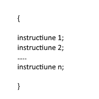
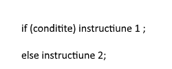
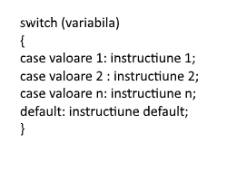
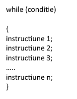
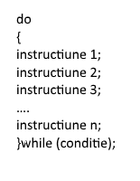
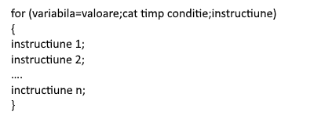

Tutorial C++
C++ este un limbaj de programare general, compilat. Este un limbaj multi-paradigmă, cu verificarea statică a tipului variabilelor ce suportă programare procedurală, abstractizare a datelor, programare orientată pe obiecte. În anii 1990, C++ a devenit unul din cele mai populare limbaje de programare comerciale, rămânând astfel până azi.Bjarne Stroustrup de la Bell Labs a dezvoltat C++ (inițial denumit C cu clase) în anii 1980, ca o serie de îmbunătățiri ale limbajului C. Acestea au început cu adăugarea noțiunii de clase, apoi de funcții virtuale, suprascrierea operatorilor, moștenire multiplă, șabloane (engleză template) și excepții. Limbajul de programare C++ a fost standardizat în 1998 ca și ISO 14882:1998, versiunea curentă fiind din 2003, ISO 14882:2003. Următoarea versiune standard, cunoscută informal ca C++0x, este în lucru.
1.Instrucțiunea liniară  |
2.Instrucțiunea If  |
3.Instrucțiunea Switch  |
4.Instrucțiunea While  |
5.Instrucțiunea Do While  |
6.Instrucțiunea For  |
Programarea orientată pe obiecte (POO, uneori și Programarea orientată obiect, uneori denumită ca și în limba engleză, Object Oriented Programming (OOP)) este o paradigmă de programare, axată pe ideea încapsulării, adică grupării datelor și codului care operează asupra lor, într-o singură structură. Un alt concept important asociat programării orientate obiect este polimorfismul, care permite abstractizări ce permit o descriere conceptuală mai simplă a soluției. deea POO (Programare Orientată Obiectual) este de a crea programele ca o colecție de obiecte, unități individuale de cod care interacționează unele cu altele, în loc de simple liste de instrucțiuni sau de apeluri de proceduri (vezi și programare procedurală). Obiectele POO sunt de obicei reprezentări ale obiectelor din viața reală (domeniul problemei), astfel încât programele realizate prin tehnica POO sunt mai ușor de înțeles, de depanat și de extins decât programele procedurale. Aceasta este adevărată mai ales în cazul proiectelor software complexe și de dimensiuni mari, care se gestionează făcând apel la ingineria programării.